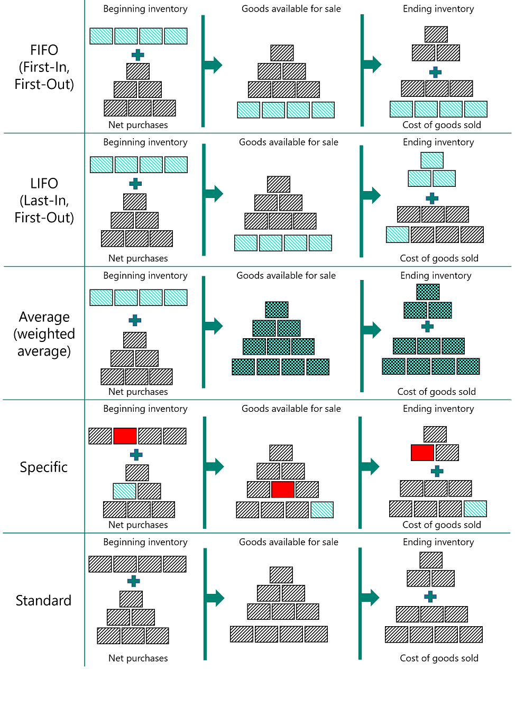

Designdetails: Kostenberechnungsmethoden
Die Lagerabgangsmethode legt fest, ob ein tatsächlicher oder ein budgetierter Wert gebucht und in der Berechnung des Einstandspreises verwendet werden soll. Zusammen mit dem Buchungsdatum und der -reihenfolge beeinflusst die Lagerabgangsmethode auch, wie der Kostenfluss aufgezeichnet wird.
Hinweis
Sie können die Lagerabgangsmethode eines Artikels nicht ändern, wenn Artikelposten für den Artikel vorhanden sind. Weitere Informationen finden Sie unter Enwurfsdetails: Die Lagerabgangsmethode für Artikel ändern.
Die folgenden Methoden werden in Business Central unterstützt:
| Lagerabgangsmethode | Beschreibung | Anwendungsbeispiele |
|---|---|---|
| FIFO | Der Einstandspreis eines Artikels ist der tatsächliche Wert jedes Eingangs des Artikels, nach der FIFO-Regel ausgewählt. In der Lagerbewertung wird angenommen, dass die ersten Artikel, die im Lager platziert sind, zuerst verkauft werden. |
In Unternehmensumgebungen, in denen die Produktkosten stabil sind. Wenn Preise steigen, zeigt die Bilanz größeren Wert. Das bedeutet, dass Steuerverbindlichkeiten zunehmen, aber die Bonität und die Möglichkeit, Bargeld zu borgen verbessert sich. Verwendung für Artikel mit einem begrenzten Haltbarkeitsdatum, da die ältesten Waren verkauft werden müssen, bevor sie ihr Mindesthaltbarkeitsdatum überschreiten. |
| LIFO | Der Einstandspreis eines Artikels ist der tatsächliche Wert jedes Eingangs des Artikels, nach der LIFO-Regel ausgewählt. In der Lagerbewertung wird angenommen, dass die letzten Artikel, die im Lager platziert sind, zuerst verkauft werden. |
Nicht zugelassen in vielen Ländern/Regionen, da es verwendet werden kann, um den Deckungsbeitrag zu drücken. Wenn Preise steigen, reduziert sich der Wert in den GuV-Konten. Das bedeutet, dass Steuerverbindlichkeiten abnehmen, aber die Möglichkeit, Bargeld zu borgen verschlechtert sich. |
| Durchschnitt | Der Einstandspreis eines Artikels wird, wie der durchschnittliche Einstandspreis, an jedem Zeitpunkt nach einem Kauf berechnet. Für die Lagerbestandsbewertung wird vorausgesetzt, dass alle Lagerbestände gleichzeitig verkauft werden. |
In Unternehmensumgebungen, in denen die Produktkosten nicht stabil sind. Vorgehensweise bei gestapelten oder miteinander kombinierten Beständen, die nicht unterschieden werden können, wie z.B. bei Chemikalien. |
| Spezifisch | Der Einstandspreis eines Artikels sind die exakten Kosten, zu denen die bestimmte Einheit empfangen wurden. | Verwendung in der Produktion oder Handel von einfach identifizierbaren Artikeln mit sehr hohen Einstandspreis. Für Artikel, die Zu-/Abschlägen unterliegen. Verwendung für Artikel mit Seriennummern. |
| Standard | Der Einstandspreis eines Artikels ist voreingestellt basierend auf vorkalkulierten Kosten. Wenn die Ist-Kosten später realisiert werden, muss der Einstandspreis (fest) auf die Ist-Kosten durch Abweichungswerte reguliert werden. |
Wird verwendet, wo Kostenkontrolle kritisch ist. In der wiederholenden Produktion zu verwenden, um die Kosten des Fertigungsmaterials, direkte Arbeit und Produktionsgemeinkosten zu bewerten. Wird verwendet, wo es Kategorie und Mitarbeiter gibt, um die Vorgaben beizubehalten. |
Die folgenden Bild zeigt, wie Kosten für jede Kostenbewertungsmethode den Bestand durchlaufen.

Kostenberechnungsmethoden unterscheiden sich in der Art, wie sie Lagerabgänge bewerten und dahingehend, ob sie Ist-Kosten oder Standardkosten als Bewertungsbasis verwenden. Die verschiedenen Eigenschaften werden in der folgenden Tabelle beschrieben. (Die LIFO-Methode ist ausgeschlossen, da diese der FIFO-Methode ähnlich ist)
| Allgemeine Eigenschaft | Anwendung/Regulierung | Neubewertung | Sonstiges | |
|---|---|---|---|---|
| FIFO | Einfach zu verstehen | Anwendung verfolgt die Restmenge. Die Regulierung überträgt Kosten je nach Mengenanwendung vorwärts. |
Bewertet nur die fakturierte Menge neu. Kann pro Artikel oder pro Artikelposten durchgeführt werden. Kann rückwirkend geschehen. |
Wenn Sie eine Bestandsminderung zurückdatieren, werden bestehende Posten NICHT erneut ausgeglichen, um einen korrekten FIFO-Kostenfluss bereitzustellen. |
| Durchschnitt | Basierend auf Periodenoptionen: Tag/Woche/Monat/Quartal/Buchhaltungsperiode. Kann pro Artikel oder pro Artikel/Lagerort/Variante berechnet werden. |
Anwendung verfolgt die Restmenge. Kosten werden nach Bewertungsdatum berechnet und weitergeleitet. |
Bewertet nur die fakturierte Menge neu. Kann nur pro Artikel durchgeführt werden. Kann rückwirkend geschehen. |
Wenn Sie eine Bestandserhöhung oder -minderung zurückdatieren, werden die Durchschnittskosten erneut berechnet, und alle betroffenen Posten werden angepasst. Wenn Sie die Periode oder Berechnungsart ändern, müssen alle betroffenen Posten reguliert werden. |
| Standard | Bedienungsfreundlich, benötigt jedoch qualifizierte Wartung. | Anwendung verfolgt die Restmenge. Anwendung basiert auf "FIFO". |
Bewertet fakturierte und nicht fakturierte Mengen neu. Kann pro Artikel oder pro Artikelposten durchgeführt werden. Kann rückwirkend geschehen. |
Verwenden Sie das Standardarbeitsblatt-Fenster, um Einstandspreise (fest) in regelmäßigen Abständen zu aktualisieren und der zu ermitteln. Wird NICHT pro SKU unterstützt. Keine historischen Datensätze für Einstandspreise vorhanden. |
| Spezifisch | Erfordert Artikelverfolgung auf der eingehenden und ausgehenden Transaktion. Normalerweise verwendet für serialisierte Artikel. |
Alle Augleiche sind fest. | Bewertet nur die fakturierte Menge neu. Kann pro Artikel oder pro Artikelposten durchgeführt werden. Kann rückwirkend geschehen. |
Sie können eine bestimmte Artikelverfolgung verwenden, ohne die bestimmte Lagerabgangsmethode zu verwenden. Die Kosten folgen nicht der Chargennummer, sondern der Kosten-Annahme der ausgewählten Bewertungsmethode. |
Beispiel
Dieser Abschnitt nennt Beispiele, wie unterschiedliche Lagerabgangsmethoden sich auf den Lagerwert auswirken.
Die folgende Tabelle zeigt die Bestandserhöhungen und -minderungen, auf denen die Beispiele basieren.
| Buchungsdatum | Menge | Lfd. Nr. |
|---|---|---|
| 01-01-20 | 1 | 1 |
| 01-01-20 | 1 | 2 |
| 01-01-20 | 1 | 3 |
| 02-01-20 | -1 | 4 |
| 03-01-20 | -1 | 5 |
| 04-01-20 | -1 | 6 |
Hinweis
Die resultierende Menge im Bestand ist Null. Aus diesem Grund muss der Lagerwert, unabhängig von der Kostenberechnungsmethode, auch Null sein.
Auswirkungen der Kostenbewertungsmethoden auf die Bewertung von Lagerzugängen
Für Artikel mit Kostenberechnungsmethoden, die die Ist-Kosten als Bewertungsbasis verwenden (FIFO, LIFO, Durchschnitt oder Spezifisch) werden Bestandserhöhungen anhand der Anschaffungskosten des Artikels bewertet.
Standard
Bei der Lagerabgangsmethode Standard werden Lagerzugänge mit den aktuellen Standardkosten des Artikels bewertet.
Standard
Bei der Lagerabgangsmethode Standard werden Lagerzugänge mit den aktuellen Standardkosten des Artikels bewertet.
Auswirkungen der Kostenbewertungsmethoden auf die Bewertung von Lagerabgängen
FIFO
Für Artikel mit der Kostenberechnungsmethode FIFO werden Artikel, die zuerst eingekauft wurden, immer zuerst verkauft (in diesem Beispiel die Postennummern 3, 2 und 1). Entsprechend gilt: Lagerabgänge werden durch den Wert des ersten Lagerzugangs bewertet.
Lagerverbrauch wird mithilfe des Werts der ersten Bestandsdatenerfassungen berechnet.
Die nachstehende Tabelle zeigt, wie Bestandsminderungen für die Kostenberechnungsmethode FIFO bewertet werden.
Buchungsdatum Menge Einstandsbetrag (tatsächl.) Lfd. Nr. 02-01-20 -1 -10.00 4 03-01-20 -1 -20.00 5 04-01-20 -1 -30.00 6 LIFO
Für Artikel mit der Kostenberechnungsmethode LIFO werden Artikel, die zuletzt eingekauft wurden, immer zuerst verkauft (in diesem Beispiel die Postennummern 3, 2 und 1). Entsprechend gilt: Lagerabgänge werden durch den Wert des letzten Lagerzugangs bewertet.
Lagerverbrauch wird mithilfe des Werts der neuesten Bestandsdatenerfassungen berechnet.
Die nachstehende Tabelle zeigt, wie Bestandsminderungen für die Kostenberechnungsmethode LIFO bewertet werden.
Buchungsdatum Menge Einstandsbetrag (tatsächl.) Lfd. Nr. 02-01-20 -1 -30.00 4 03-01-20 -1 -20.00 5 04-01-20 -1 -10.00 6 Durchschnitt
Die Lagerabgangsmethode Durchschnitt bewertet einen Lagerabgang, indem sie den gewogenen Durchschnitt des verbleibenden Lagerbestandes zum Bewertungsdatum auf den Lagerabgang überträgt. Weitere Informationen finden Sie unter Designdetails: Durchschnittliche Kosten
Die nachstehende Tabelle zeigt, wie Bestandsminderungen für die Kostenberechnungsmethode Durchschnitt bewertet werden.
Buchungsdatum Menge Einstandsbetrag (tatsächl.) Lfd. Nr. 02-01-20 -1 -20.00 4 03-01-20 -1 -20.00 5 04-01-20 -1 -20.00 6 Standard
Für Artikel mit der Kostenberechnungsmethode Standard werden Bestandserhöhungen ähnlich wie bei der Kostenberechnungsmethode FIFO bewertet, außer dass die Bewertung auf Standardkosten basiert, nicht auf den Ist-Kosten.
Die nachstehende Tabelle zeigt, wie Bestandsminderungen für die Kostenberechnungsmethode Standard bewertet werden.
Buchungsdatum Menge Einstandsbetrag (tatsächl.) Lfd. Nr. 02-01-20 -1 -15.00 4 03-01-20 -1 -15.00 5 04-01-20 -1 -15.00 6 Ausgewählt
Die Lagerabgangsmethoden bringen die Annahme zum Ausdruck, dass die Kosten von Lagerzugängen zu Lagerabgängen fließen. Wenn genauere Informationen über den Kostenfluss vorliegen, können Sie diese Annahme jedoch überschreiben, indem Sie einen festen Ausgleich zwischen Posten erstellen. Eine feste Anwendung erstellt eine Verknüpfung zwischen einem Lagerabgang und einem bestimmten Lagerzugang und leitet den Kostenfluss entsprechend.
Für Artikel, die die Kostenberechnungsmethode Spezifisch verwenden, werden Bestandsminderungen entsprechend der Bestandserhöhung bewertet, mit der sie durch den festen Ausgleich verknüpft sind.
Die nachstehende Tabelle zeigt, wie Bestandsminderungen für die Kostenberechnungsmethode Spezifisch bewertet werden.
Buchungsdatum Menge Einstandsbetrag (tatsächl.) Ausgleich mit Lfd. Nr. Lfd. Nr. 02-01-20 -1 -20.00 2 4 03-01-20 -1 -10.00 1 5 04-01-20 -1 -30.00 3 6
Siehe auch
Designdetails: Lagerbewertung
Designdetails: Abweichung
Designdetails: Einstandspreis
Designdetails: Artikelausgleich
Verwalten der Bestandsregulierung
Finanzen
Arbeiten mit Business Central
Glossar der Begriffe in Dynamics 365-Geschäftsprozessen
Kostenlose E-Learning-Module für Business Central finden Sie hier